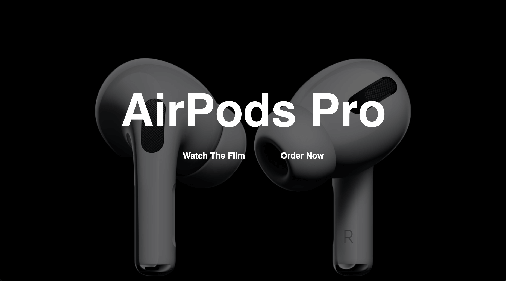

View My Work:
Apple Airpods Pro
No, I didn't make a website for apple, but I recreated some effects with my own code without any references
No, I didn't make a website for apple, but I recreated some effects with my own code without any references